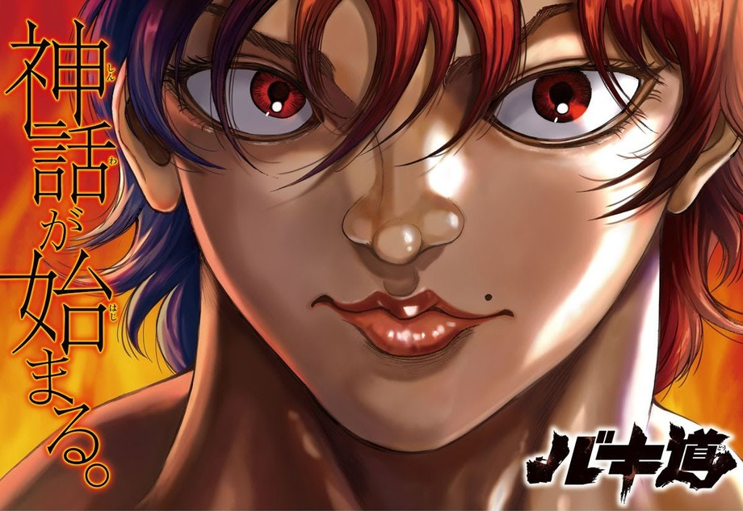
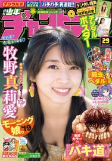
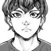
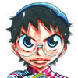
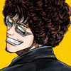
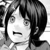
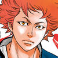
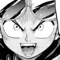

Los puestos y comentarios de los autores de la Weekly Shonen Champion de esta semana.

Yuuenchi Baki Gaiden

El otro día recibí una llamada de Bunshun Bunko porque Onmyoji llegó a 60 reimpresiones. Es un libro que publique en agosto de 1988 que consiguió una edición rústica en 1991 (Baku Yumemakura)
Sachio-kun

No sé exactamente qué significa, pero siempre voy a comprar con una imagen de un exoesqueleto reforzado en mi bolsa ecológica.
Yowamushi Pedal

Corrí la carrera SDA Wang Waterfall MTB de 100 kilómetros. Estuve 6 horas y 33 minutos sin parar sin ningún problema!!
Appare! Urayasu Tekkin Kazoku

Puede que "Godzilla
Rokudo no Onnatachi

Vi la nueva película de Godzilla! Fue estupenda! La recordarás para siempre.
Rororro!
Es muy vergonzoso cuando estás en esa situación en la que hay bebidas derramadas en cafés y necesitas a un trabajador que lo limpie.
Atsumare! Fushigi Kenkyuubu
Tengo muchas ganas del nuevo "Animal Crossing
BEASTARS
Me gustaría comer bollos en invierno y arroz en verano. Pero sobretodo quiero comer fideos durante todo el año.
Worst Gaiden Guriko

Gracias por todo. Una doble edición del Volumen 1 ha sido anunciada! Gracias de nuevo! (Suzuki)
Ashigei Shoujo Komura-san
Tamasuri fue cambiado a JUNK el lunes por un error que cometió Akae Tamae
Mairimashita! Iruma-kun
Fui a un café de juegos de mesa! Fue relajante e interesante!
'Ippon' Again
Nunca he estado tan gordo en mi vida, creo que tendria que hacer algo para cambiarlo.
Boryaku no Panzer
Gracias por vuestro apoyo al volumen! Soy un demonio del egosurfing y puedo verlo todo!
Harigane Service Ace

La irritante protagonista femenina de la obra 'Ushijima' estuvo desaparecida durante la primera parte y luego aparecía constantemente en la segunda.
Bishoujo Senshi Papa (One-Shot)

Cuánto tiempo. Estoy enganchado a "Dragón Quest 3". No puede derrotar a Baramos.
Magical Girl Site

He hecho dibujos de alta calidad esta semana.
0

Luchemos.
Himawari

Hay una historia más. Apreciaría si la leyeseis.
Koujin Tekken Jappo (One-Shot)

Espero que disfrutéis mi trabajo! Próximamente publicaré una serie! (Me presionaré).
Furutto on Thursday

Pensaba que era algo bueno que mi ayudante hubiese hecho su debut en una revista famosa. Lo siento!
Baki Dou
Keisuke Itagaki
Si dibujas durante mucho tiempo, tus lectores se harán adultos y crecerán como personas. Hay casos excepcionales, pero está bien también!